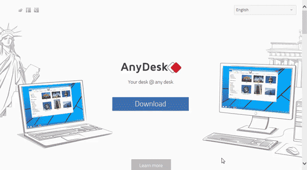
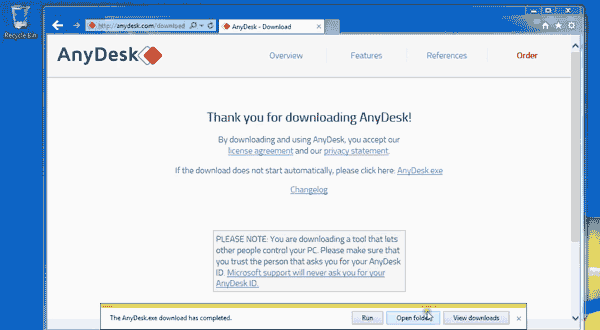
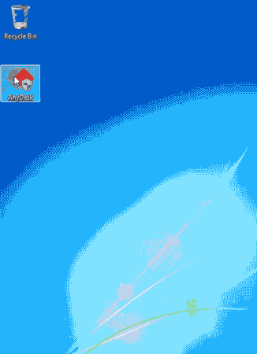

As of January 2014, the fairly known software called LogMeIn unfortunately has terminated their free access accounts. Because of that, we have switched to AnyDesk, which allows us to provide convenient support with little to no costs to our users. LogMeIn still provides premium access, but at a monthly cost.
AnyDesk is a remote desktop software that is user friendly and comes with little to no cost. This software will allow the Vivaldi Team to provide support by logging in to your system remotely. Fortunately, this software doesn't require you to make an account, so you can get up an running in no time. Below we provide step-by-step instructions on how to install the software on your system:
Follow these steps to continue:
Step 1: Download AnyDesk Online
To install the software you must first visit the website by going to www.anydesk.com and by downloading the software by clicking on the blue button on the center page or by clicking this download link.

Save the file onto the desktop if possible and then skip to Step 3. If not, then Internet Explorer will save the file in its default directory, which is the "Downloads" folder.
Step 2: Move AnyDesk Application to Desktop
Once the file is downloaded, click on open folder or open the file explorer and head to the downloads folder from the left task pane.
Click and drag the application to the Desktop.

Step 3: Give Administrator Priviledges to AnyDesk Application
Since most installation require permission from the administrative user, it doesn't allow remote users to install programs. We have to give admin access to remote users (like us).
Head to the application you have just moved. Right-click and head to properties.
In the compatibility tab, there is a section called Privilege Level. Click the checkbox to turn on "Run this program as administrator."
Then click below to change the setting to all users and run the program as administratos as well.

Step 4: Run the Program.
Run the program by double-clicking on the icon.
It might ask you to allow permission to run this program. Click yes to allow.
The program should have started!
The account address on the top of the screen is the ID that you will give customer support in order for them to remote into your computer.
IMPORTANT NOTE: BE SURE TO KEEP NOTE OF ALL YOUR USERNAMES AND PASSWORDS EITHER INITIALLY STORED AND THAT YOU’VE CREATED, AS IT WILL BE NECESSARY FOR SUPPORT.